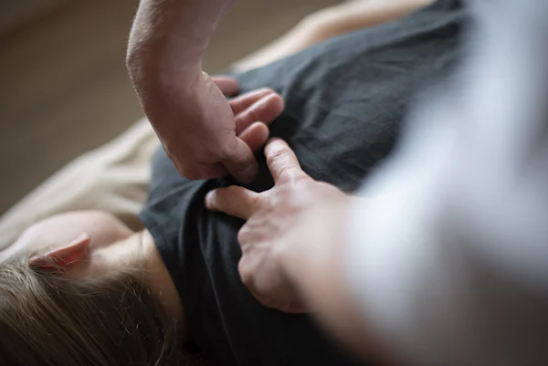
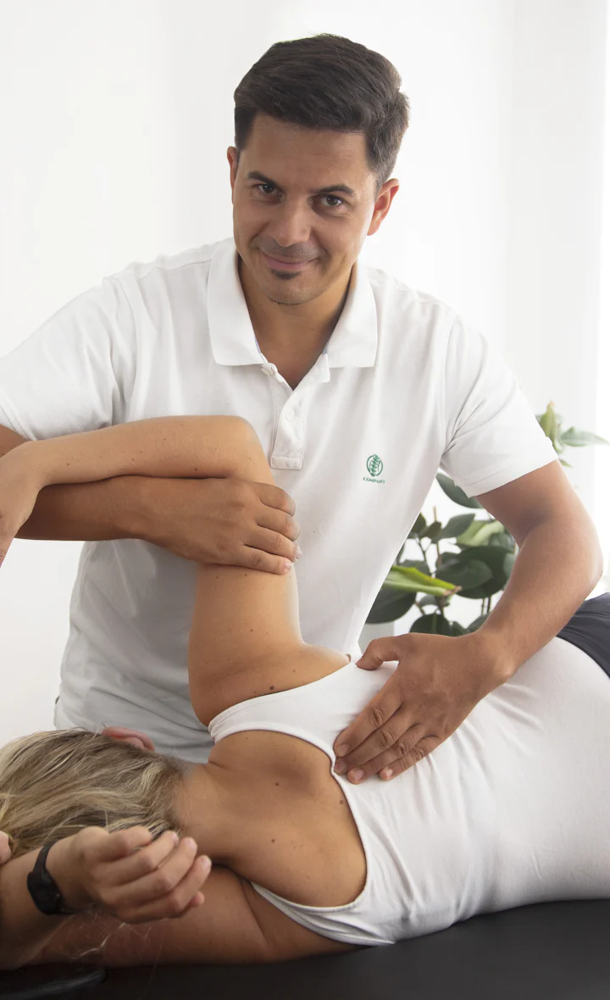
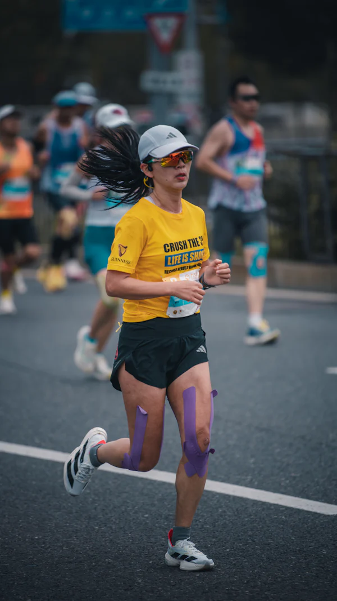
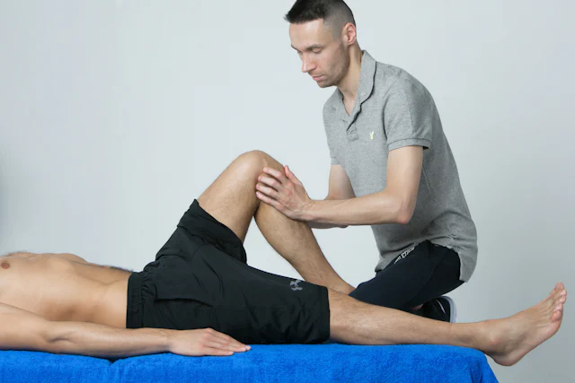
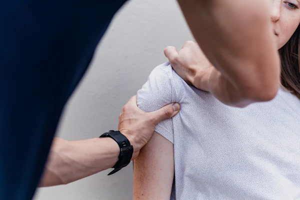
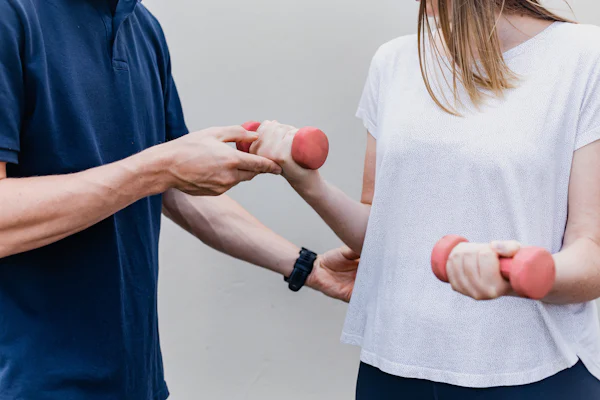
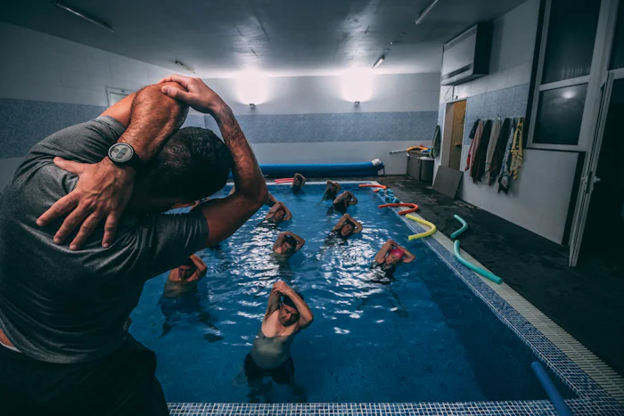
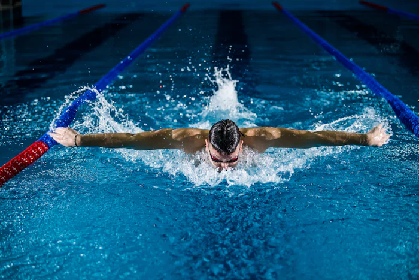
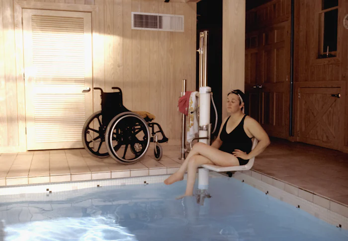

Dolor de espalda y cuello
Para la molestia que aparece al estar sentado muchas horas, al cargar peso o al despertar. Evaluamos tu postura y cómo te mueves para tratar la causa, no solo el dolor del momento.
Preguntar por WhatsAppDolor de espalda y cuello, lesiones deportivas, rehabilitación después de una operación y terapia en el agua, en Mérida. Para deportistas y para cualquier persona que quiera moverse mejor.

Trabajo con deportistas y con personas de todas las edades. Si no ves tu caso, escríbeme y te digo con sinceridad si te puedo ayudar.

Para la molestia que aparece al estar sentado muchas horas, al cargar peso o al despertar. Evaluamos tu postura y cómo te mueves para tratar la causa, no solo el dolor del momento.
Preguntar por WhatsApp
Esguinces, molestias por sobrecarga y lesiones que te sacaron del entrenamiento. Como también entreno, armo la rehabilitación pensando en tu deporte.
Preguntar por WhatsApp
Rehabilitación paso a paso después de una cirugía de rodilla, hombro, tobillo u otra zona, siguiendo las indicaciones de tu médico.
Preguntar por WhatsApp
Técnicas con las manos para trabajar músculos y articulaciones, siempre junto con ejercicio y con lo que encontramos en la evaluación.
Preguntar por WhatsApp
Ejercicio terapéutico para ganar fuerza y movilidad, cuidar las zonas que más te molestan y entrenar con más tranquilidad.
Preguntar por WhatsApp
Ejercicio terapéutico en piscina, con menos impacto. La trabajo sobre todo con señoras mayores.
Conocer más
Foto referencialSoy fisioterapeuta en Mérida. Además entreno y nado, así que conozco desde adentro las ganas de volver y la impaciencia que trae una lesión.
Pero no hace falta ser deportista para atenderte conmigo: trabajo con personas de todas las edades, desde quien quiere volver a competir hasta quien solo quiere subir las escaleras sin molestia.
"Primero te escucho y te evalúo. Después decidimos juntos cómo seguir."
El agua sostiene parte del peso del cuerpo. Por eso, movimientos que en tierra cuestan, en la piscina se pueden trabajar con más calma y con menos impacto.
Trabajo en piscina con mis pacientes, sobre todo con señoras mayores, a su ritmo. Es un complemento del tratamiento, no un reemplazo.
Después de evaluarte te digo con sinceridad si el agua es una buena opción para tu caso.

Fotos referencialesSin apuro y con todo explicado, para que salgas sabiendo qué tienes y qué vamos a hacer.
Por WhatsApp me cuentas brevemente qué te pasa y buscamos el día para vernos.
Cómo empezó, qué te molesta y cómo es tu día a día o tu entrenamiento. Si tienes estudios o informes médicos, tráelos.
Reviso cómo te mueves para entender de dónde viene la molestia y qué la empeora.
Te explico lo que encontré y decidimos juntos cómo seguir: en seco, en el agua o combinando las dos.
¿Tienes otra duda? Escríbeme y te respondo por WhatsApp.
No. Trabajo con deportistas y nadadores, y también con personas de todas las edades que solo quieren moverse mejor en su día a día.
Depende de cada caso. Después de evaluarte te explico lo que encontré y el plan que te propongo. No te voy a prometer un número de sesiones antes de verte.
Sí, hago rehabilitación postoperatoria, siempre siguiendo las indicaciones de tu médico tratante.
No siempre es la mejor opción para todos. En la evaluación vemos si el agua te conviene. Hoy la trabajo sobre todo con señoras mayores.
Ropa cómoda que te permita moverte y, si los tienes, los estudios o informes médicos de tu caso.
Escríbeme por WhatsApp y te paso toda la información de una vez.
Marca lo que te trae y la página te escribe el mensaje. Se abre WhatsApp y tú decides si lo envías. Aquí no se guarda nada.